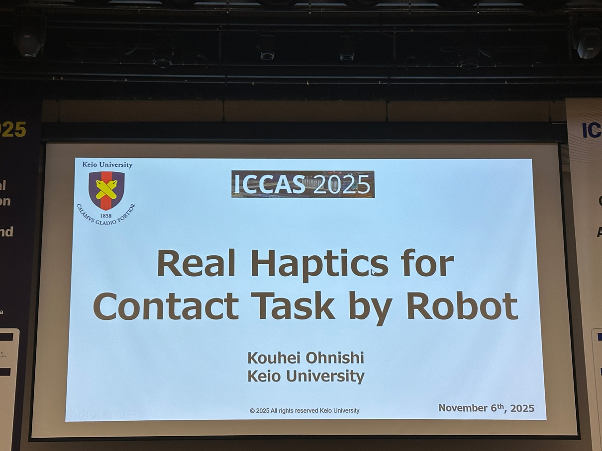
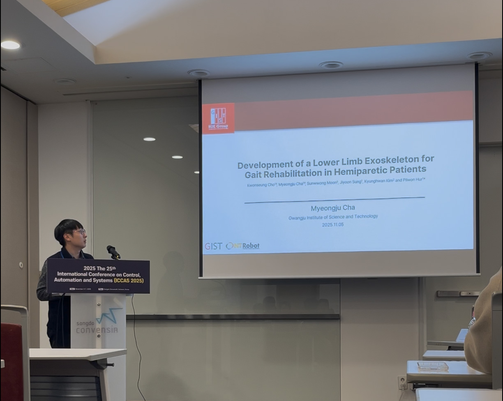
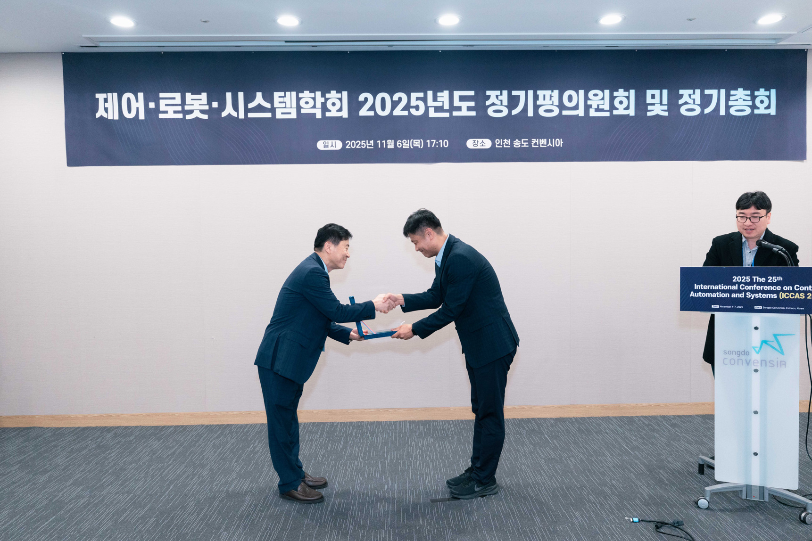
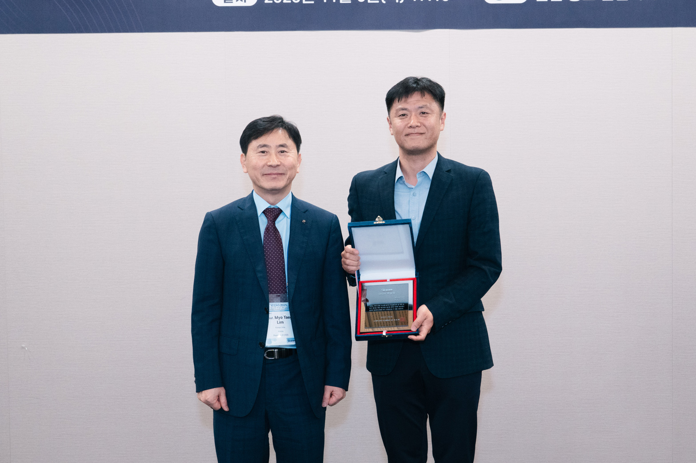
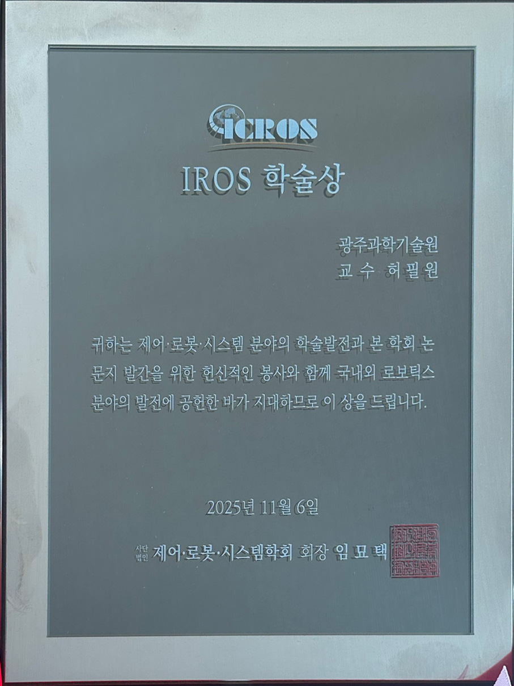
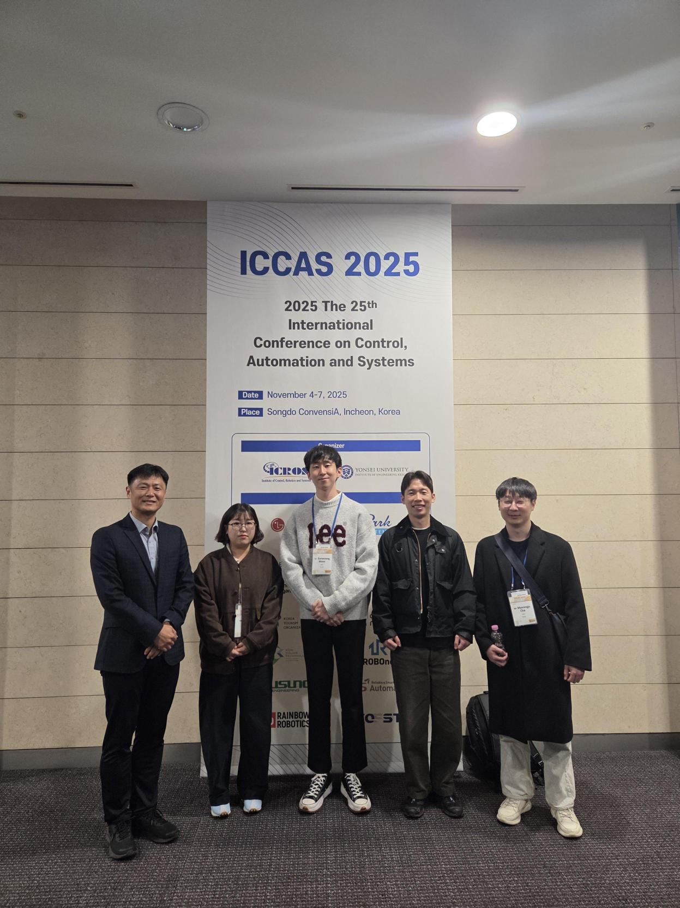

작성자: 허필원
지난 11월 4일부터 7일까지 인천 송도 컨벤시아에서 개최된 ICCAS 2025 (International Conference on Control, Automation and Systems) 학회에 우리 연구실이 참석하였습니다. 이번 학회에서는 연구 발표는 물론, 뜻깊은 수상 소식까지 함께 전해드릴 수 있어 더욱 기쁩니다.

ICCAS는 제어, 자동화, 시스템 분야의 최신 연구 동향을 공유하는 국제학회로, 매년 국내외 많은 연구자들이 참여합니다. 이번 학회에 우리 연구실에서는 허필원 교수를 비롯하여 조권승, 차명주, 문선웅, 성지윤 학생이 함께 참석하였습니다.
허필원 교수는 이번 학회에서 다음 세션들의 세션 체어 역할을 맡아 학회 운영에도 기여하였습니다:
Robotic Applications 3
Robot Mechanism and Control 1
Autonomous Control and Applications 1
우리 연구실에서는 편마비 환자를 위한 하지 외골격 보행 재활 로봇 개발에 관한 논문을 발표하였습니다. 발표는 차명주 학생이 진행하였으며, 청중들의 많은 관심과 질문을 받았습니다.
Kwonseung Cho, MyeongJu Cha, Sunwoong Moon, Jiyoon Sung, Kyunghwan Kim, and Pilwon Hur, "Development of a Lower Limb Exoskeleton for Gait Rehabilitation in Hemiparetic Patients," ICCAS 2025, Nov 4-7, 2025, Incheon, Korea

이번 학회의 여러 기조강연 중에서도 특히 인상 깊었던 것은 Plenary Lecture 3로 진행된 Prof. Kouhei Ohnishi 교수의 강연이었습니다. 강연 제목은 "Real Haptics for Contact Task by Robot"으로, 로봇의 접촉 작업을 위한 햅틱스 기술에 관한 내용이었습니다.
Ohnishi 교수는 제어 분야에서 없어서는 안 될 중요한 개념인 Disturbance Observer (DOB)의 창시자로 널리 알려져 있습니다. 이러한 거장께서 연구 주제를 확장하여 햅틱스 분야에서도 활발히 연구를 수행하고 계신다는 점이 매우 인상적이었습니다. 발표 내용의 상당 부분은 저 또한 한동안 활발하게 연구했던 분야여서 더욱 반갑고 흥미롭게 들을 수 있었습니다.
이번 학회에서 가장 기쁜 소식은 바로 허필원 교수의 IROS 학술상 수상입니다!
수상 사유는 다음과 같습니다:
"귀하는 제어 로봇 시스템 분야의 학술발전과 본 학회 논문지 발간을 위한 헌신적인 봉사와 함께 국내외 로보틱스 분야의 발전에 공헌한 바가 지대하므로 이 상을 드립니다."



그동안 로보틱스 분야의 발전을 위해 노력해 온 결과가 이렇게 인정받게 되어 매우 영광스럽고 감사한 마음입니다.

ICCAS 2025는 최신 제어 및 로봇 기술의 동향을 파악하고, 다양한 연구자들과 교류할 수 있었던 뜻깊은 자리였습니다. 특히 이번 학회에서 수상의 영광까지 함께하게 되어 더욱 의미 있는 시간이었습니다. 앞으로도 우리 연구실은 재활 로봇 및 인간 친화적 로봇 기술 연구에 더욱 매진하겠습니다. 연구실 소식에 많은 관심 부탁드립니다!
참석자 명단: 허필원, 조권승, 차명주, 문선웅, 성지윤